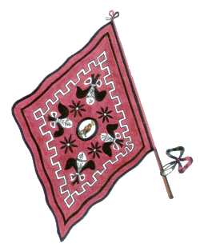

CAPITANI VITTORIOSI:
1 Giuseppe Becheroni
1 Gaetano Franci
1 Giulio Granai
1 Pietro Colombini
1 Stafano Michi
1 Pietro Gambi
1 Domenico Tanzini
1 Salvadore Poggiolini
1 Gaetano Bandini
1 Antonio Braccianti
1 Carlo Ferretti
1 Giuseppe Montaini
1 Adamo Tanzini
1 Luigi Rugani
1 Gaetano Inglesi


- IN GRASSETTO QUANDO VINSE